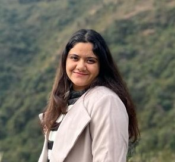

Aastha verma
Third Year Engineering Student
Patiala,Punjab 147001
SUMMARY
A passionate, hardworking, and ambitious Computer Science Enthusiast, looking to kickstart my career in a
dynamic organization that will contribute to my professional and personal growth.
EDUCATION
1. Thapar Institute of Engineering and Technology
B.Tech - Electronics and Computer Engineering
Overall GPA: 7.80/10
2. DAV Public School
12th Non Medical
Percentage: 86.50
TECHNICAL STRENGTHS
1. COMPUTER LANGUAGES : C,C++,Python,HTML,CSS,MATLAB,MySQL
2. SUBJECTIVE KNOWLEDGE : DSA,OOP’s,DBMS,Operating System,Computer Networks
3. FRAMEWORKS & TOOLS : Bootstrap,JavaScript.ReactJS,Github, Adobe Photoshop,Adobe Illustrator
4. OPERATING SYSTEMS : Windows,Linux
POSITION OF RESPONSIBILITY
1. FROSH
Mentor
Managed to conduct two- week long events along with a team of 70 members, where we conducted events and
orientation for freshers in which my contribution was into website development and marketing
2. THAPAR ADMISSION CELL
Member
Successfully conducted three - day academic counseling along with Thapar faculty and members of frosh.
PROJECTS
1. GRID GAME
Tools- Data structures & Algorithms
By using my knowledge of data structures & Algorithms , I made a Grid Game , in which user has to input the position of
random number in Grid , according to the given goal in the console screen.
2. PDF PROTECT
Tools- Python(Django)
This project is a Django web application that allows users to upload PDF files, secure them with a
password, and email the secured PDF to a recipient using Gmail SMTP
3. BULK EMAILING
Tools- Python(Django)
This project is a Django web application that allows users to upload Excel file, and email dynamic content to multiple
recipients using Gmail SMTP
ACHIEVEMENTS
1. Got the Title MISS IZHAAR in one of the biggest cultural fest of Thapar university, IZHAAR.
2. Awarded for being the part of Admission Cell.